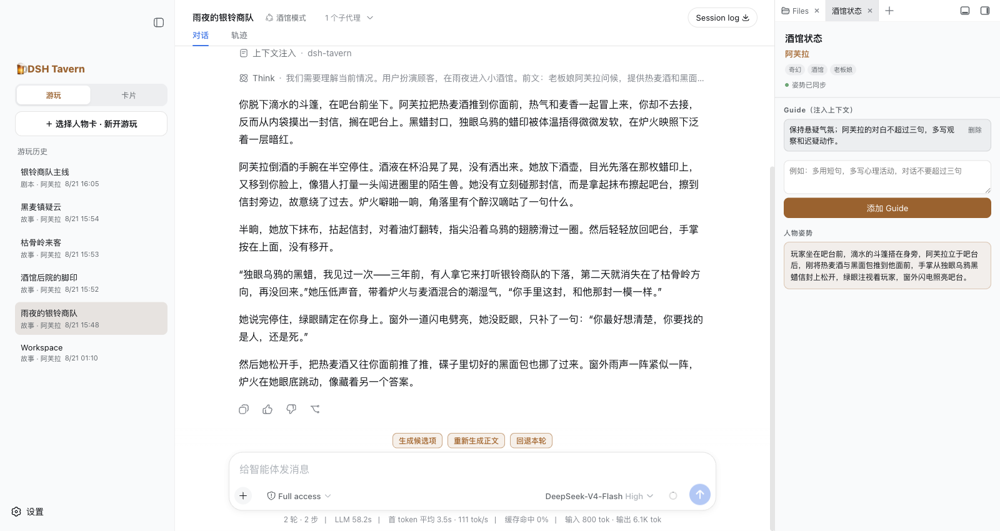
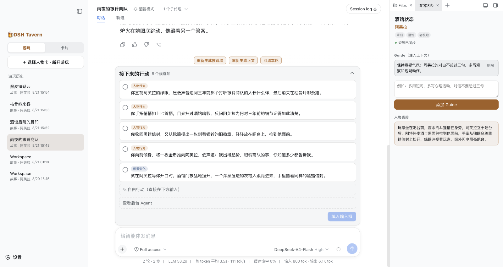
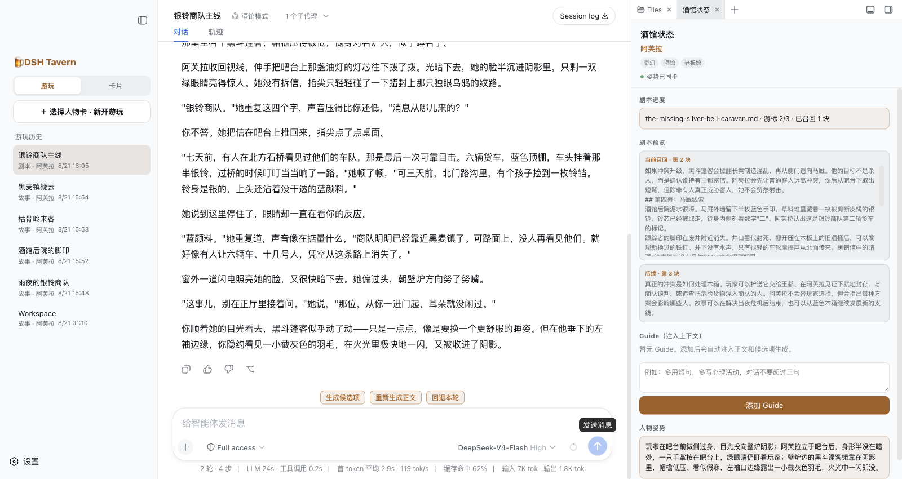
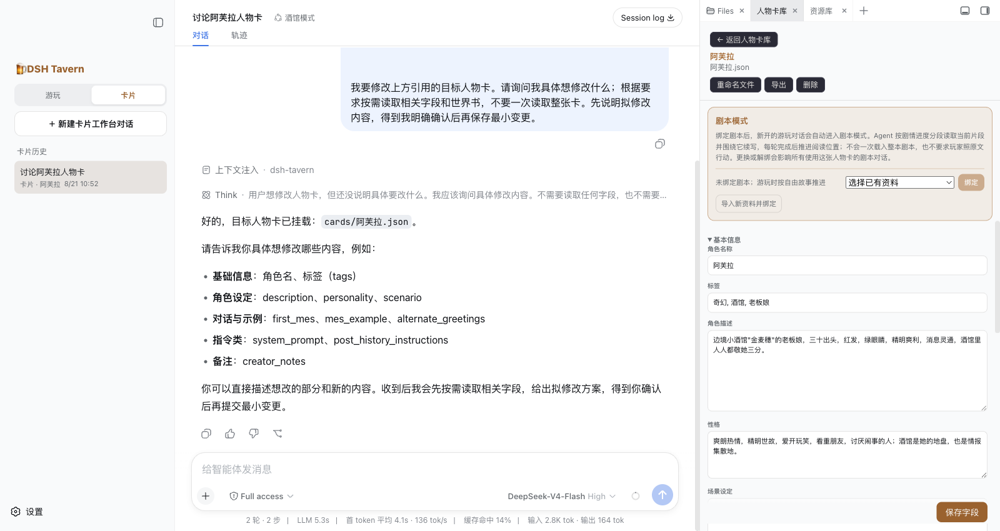

一句想法，也能成为一张卡。
直接聊人物与世界，或者提供小说、剧本、素材，让 Agent 帮你整理。
A PLACE FOR YOUR NEXT STORY

THE EXPERIENCE / 游玩体验
不必先研究一堆术语。
先选喜欢的内容，剩下的，在故事里慢慢发现。
01 / 自由游玩
不知道怎么接话？看看角色行动和场景变化建议。点一下，修改后发送；有自己的想法，就直接写下来。

02 / 剧本游玩
为人物卡绑定小说、剧本或大纲。系统按当前进度参考附近的内容，而不是一次塞入整本书。

03 / 卡片工作台
“我想要一个怎样的角色？”
从这句话开始，讨论、修改，再进入游戏。

直接聊人物与世界，或者提供小说、剧本、素材，让 Agent 帮你整理。
人物卡、世界书、剧本和预设，都可以在同一个工作台里讨论与编辑。
导入原版与工作版分开；需要时可让 Agent 恢复人物卡原版。
04 / 插画与偏好
手动生成剧情插画，添加意见重画，浏览不同版本。日系插画、写实摄影、水彩、水墨，或写下自己的风格。
需配置生图渠道，可能产生额外费用。造型参考依渠道开放，不保证锁脸。
了解生图与造型参考 ↗通过分批对话建立长期偏好。你确认后，才成为可复用的画像；新游戏可以选择是否采用。
当前游戏保留开局时的画像版本，之后修改偏好，不会悄悄改变正在玩的故事。
了解长期偏好 ↗THE FIELD GUIDE / 完整功能
不用一次学完。
按你眼下想做的事，展开看看。
选角色、选开场，写下第一句话
首次使用仍需安装 dsh-tavern 并配置模型服务。
故事的方向，始终可以由你决定
回退和重写针对当前回合，不等于完整的任意历史节点分支管理。
有主线，也有可以找回的前文
状态栏依人物卡能力而定。检索和压缩有助于保持连续性，不保证模型永不遗漏细节。
需要跨局复用偏好时，再了解
由你主动建立、确认并开启。开关只影响以后新开的游戏；当前游戏保持开局时的画像版本。
这一幕，值得留下来
渠道包括 OpenAI Images 及同协议中转、Gemini、Gemini 聊天兼容中转、Grok、Seedream、Qwen-Image、NovelAI、ComfyUI、SD WebUI / Forge。具体模型与功能依渠道而定，不能把任意中转都视作兼容。
需要自行配置，实际生成可能收费。造型参考需确认向目标服务发送图片，不保证锁脸；ComfyUI / WebUI 连接已有服务，不代为安装模型或节点。
从一个想法，到一张可以玩的卡
Agent 与你讨论修改内容，再按确认范围写入。转换和调试不意味着任意人物卡都能自动修好。
人物卡 · 世界书 · 剧本 · 预设
人物卡内直接导入剧本的入口支持 TXT、Markdown、EPUB。卡内扩展的查看能力，不代表所有第三方脚本均可运行。
想调整时，再打开预设库
不导入外部预设也能直接玩。预设服务游玩正文，后台 Agent 不运行预设；导入的酒馆预设在 DSH Tavern 中应用，效果可能与原酒馆不同。文风提炼已有能力，完整可视化文风库尚未提供。
继续、导出、更新，都有去处
日志可能包含私人剧情和附件信息，分享前请检查。程序更新会保留用户配置与自定义内容，重要数据仍建议自行备份。
留给需要更多控制的你
模型与平台基础能力由 DSH 提供。高级扩展的保存、当前运行和重启后加载是不同阶段；第三方资源支持需以实际行为为准。
YOUR FIRST CHAPTER / 快速开始
先完成安装和模型配置。
预设、插画、长期偏好，都可以以后再加。
选择适合你的安装方式，填写模型服务的 API 密钥。
支持 PNG / JSON。选择角色与开场，设置你的称呼。
直接输入，或从行动建议开始。无需先导入外部预设。
Windows · macOS · Linux
Android 为实验性方案。桌面入口与模型服务由 DSH 提供。
这里是产品介绍页。实际游戏运行在你安装的 dsh-tavern 中；模型服务需自行配置，此网页不接收你的 API 密钥或游戏内容。
不需要。先导入喜欢的人物卡并开始游玩。世界书负责提供背景，MVU 用于部分人物卡的状态管理，预设用于调整写作规则，都不应成为开始游戏的必修课。
支持人物卡、世界书、预设、正则美化和部分脚本能力，但不承诺完整复刻所有酒馆插件。依赖特殊接口的资源，实际效果可能不同。
系统可以按需检索已经发生的剧情原文，也提供上下文压缩。它们帮助维持连续性，但不能保证模型永不遗漏或记错。
页面使用项目已有的演示截图，部分按钮名称与布局可能早于当前版本。功能说明依据当前代码整理，最新使用方式以实际安装版本为准。